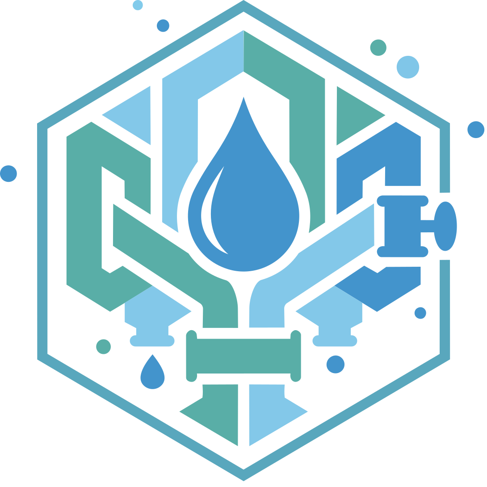

BLOG POSTING MANUAL
ブログ・お知らせ
投稿マニュアル
はじめての方でも大丈夫。
この冊子どおりに進めれば、5分でブログ・お知らせが公開できます。
迷ったら遠慮なく LIGO まで、お気軽にご連絡ください。
社内でのみ共有される「秘密URL」からログインします。
お渡ししたログイン専用URLをブラウザで開きます（口頭でお伝えします）。
ユーザー名（ID）とパスワードを、それぞれの入力欄に打ち込みます。
青いボタンを押せば、管理画面が開きます。以上でログイン完了です。
YUKOH SETSUBI
紙への印刷や、社外向けメール・SNSへの記載は厳禁です。
もし他の社員に伝えるときは、口頭または社内チャットのみで。パスワードもふくめ、大切に管理してください。
「投稿」から新しい記事を作成します。
管理画面の左サイドバー「投稿」にマウスを合わせて「新規追加」をクリック。
一番上の大きな枠に、記事のタイトルを書き込みます。
例：「配水管の布設替工事、完了しました」
タイトルの下の大きな枠に本文を書きます。Wordに書くのと同じ感覚で大丈夫です。
特別なことじゃなくて大丈夫。「今日の現場でこんなことがあった」「新人と一緒にBBQをやった」「畑のきゅうりが豊作」など、日常のちょっとした話題で十分です。
写真1〜2枚と、短い文章（3〜5行）でも立派な記事になります。
ドラッグ＆ドロップで、簡単に写真を挿入できます。
本文中の写真を入れたい場所で「＋」ボタンをクリック → 「画像」を選択。
「アップロード」で PC の中から選ぶか、そのままドラッグ&ドロップでも OK。
右サイドバー「アイキャッチ画像」で、記事一覧に表示される見出し写真を1枚選びます。
ここに写真をドロップ
または
最大 10 MB / JPG・PNG
iPhone や普通のデジカメで撮った写真をそのまま使えます。サイズは自動で調整されます。
拡張子は JPG / JPEG / PNG どれでも OK。1枚あたり 10MB 以内が目安です。
最後に「公開」ボタンを押せば、世界中から読めるようになります。
右サイドバー「カテゴリー」から、記事のジャンル（現場・朝礼・活動 等）にチェック。
「プレビュー」を押すと、公開後の見え方が確認できます。まずここで確認するのがおすすめ。
問題なければ、右上の青い「公開」ボタンをクリック。もう一度確認画面が出るので、そこでも「公開」。
公開
👁 プレビュー
カテゴリー
アイキャッチ画像
公開済みの記事は、いつでも「編集」ボタンから修正できます。
また、右サイドバーで「公開状態」を「下書き」に戻せば、一度非公開に戻すこともできます。安心して公開ボタンを押してください。
ブログとは別に「お知らせ」も投稿できます。
ブログの下にある「お知らせ」→「新規追加」をクリック。
ブログと同じように、タイトルと本文を入力します。
青い「公開」ボタンでOK。トップページの「最新情報」に自動で表示されます。
ブログ：現場のリアル、社内イベント、日常の話題など、社員のみなさんの人柄が伝わる話。
お知らせ：休業日、採用情報、受注案件、公式な連絡事項など、会社としての公式なお知らせ。
迷ったら「ブログ」に投稿しておけば大丈夫です。
操作でつまづきやすいポイントをまとめました。
パスワードを忘れてしまいました
ご心配なく。LIGO 池下（ikeshita.tsukashi@li-go.jp）までご連絡いただければ、パスワードの再発行を承ります。
間違えて公開してしまいました
左メニュー「投稿」から該当記事を開き、右サイドバーの「公開状態」を「下書き」に切り替えて更新すれば、非公開に戻せます。削除したい場合は「ゴミ箱へ移動」で完全に削除できます。
スマホからでも投稿できますか？
はい、スマホ・タブレットのブラウザからでも投稿できます。同じ秘密URLにアクセスして、IDとパスワードを入力すれば、パソコンと同じように使えます。現場からその場で更新することも可能です。
下書きのまま、まだ公開したくない
右上の「公開」ボタンではなく、「下書き保存」を押してください。次回ログイン時に「投稿一覧」から続きを書けます。
写真をたくさん載せてもいいですか？
全然大丈夫です。ただし1枚あたり10MB以内、記事全体で20枚くらいまでが目安です。多すぎるとページの表示が遅くなるので、厳選するのがおすすめです。
投稿した記事はどこで見られますか？
公開後、ホームページの「Blog」または「News」メニューをクリックすると、投稿した記事が一覧で表示されます。トップページにも自動で最新3件が表示されます。
操作方法・不具合・パスワード再発行など、何でもお気軽にご相談ください。
担当：LIGO 池下 電話：080-xxxx-xxxx メール：ikeshita.tsukashi@li-go.jp